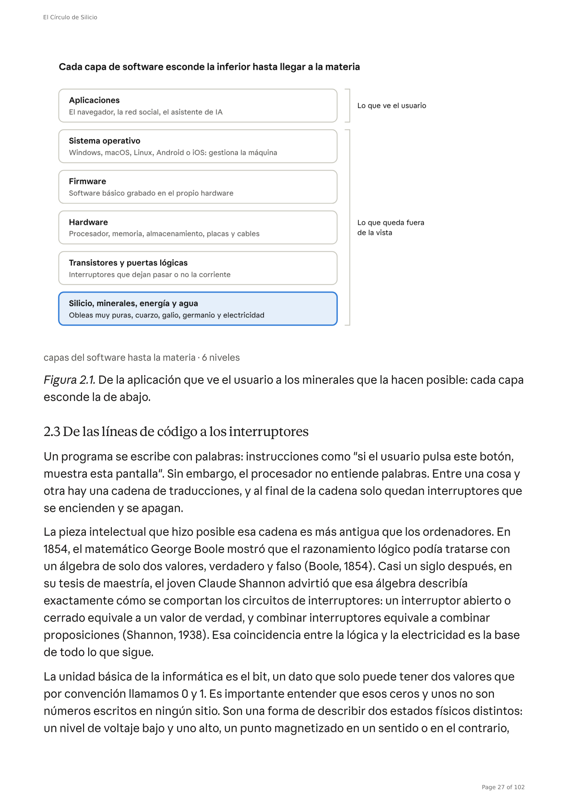

Capítulo 2. La ilusión de la inmaterialidad
Cuando una tecnología funciona muy bien, tendemos a olvidar que existe. Nadie piensa en las tuberías al abrir el grifo ni en la red eléctrica al encender una luz, hasta que algo falla. Con la tecnología digital ocurre algo parecido, pero llevado al extremo, porque además de funcionar bien se ha presentado con un vocabulario que invita a olvidar su cuerpo: la nube, lo virtual, lo digital, lo inalámbrico. Son palabras que sugieren ausencia de materia, y todas son, en un sentido literal, engañosas.
Este capítulo es el centro del libro, porque aquí se pone a prueba su tesis: que la información necesita un cuerpo. Recorre seis niveles de esa materialidad escondida. Empieza por lo más grande y visible, los edificios y los cables que sostienen internet. Sigue con una distinción básica que casi nadie explica bien, la que separa el hardware del software. Baja después al nivel de los interruptores, para ver cómo un programa se convierte en señales físicas, y al de los chips, donde la fabricación roza los límites de la física. Examina a continuación el segundo hilo del libro, el error: cómo se consigue que
máquinas hechas de millones de piezas falibles casi nunca fallen. Y termina con una pregunta de balance: qué minerales, qué agua y qué energía consume todo esto, y quién los pone.
2.1 La “nube” tiene dirección postal
En los diagramas con los que los ingenieros de telecomunicaciones dibujaban sus redes, la parte del sistema que era demasiado compleja, o que no importaba para el esquema, se representaba con el dibujo de una nube. Dentro de la nube estaba “lo que sea que haya ahí”, y el resto del esquema podía ignorarlo. Era una herramienta de abstracción útil para quien diseñaba el sistema. La expresión “computación en la nube” es posterior y tiene un origen más comercial. Según la reconstrucción periodística de Regalado (2011), el término nació como una etiqueta de marketing en la década de 1990, y se popularizó en agosto de 2006, cuando el entonces consejero delegado de Google, Eric Schmidt, habló en un congreso de servicios que debían estar “en una nube” en algún sitio. Ese mismo mes Amazon anunció su servicio de alquiler de capacidad de cálculo, EC2. Cinco años después, el Instituto Nacional de Estándares y Tecnología de Estados Unidos (NIST) publicó una definición oficial del concepto (Mell y Grance, 2011).
Este es el primer truco del lenguaje: una palabra que nos habla de algo ligero, flotante y sin dueño, cuando lo que describe es un conjunto muy concreto de máquinas que pertenecen a alguien, están en algún sitio y se pagan con dinero y con energía. La sociología de la tecnología tiene una explicación general para este mecanismo, que se retomará en el Capítulo 6: las infraestructuras tienden a volverse invisibles precisamente cuando funcionan bien, y solo se perciben cuando fallan (Star, 1999).
Cuando enviamos un mensaje, vemos un vídeo o le hacemos una pregunta a un asistente de inteligencia artificial, la información viaja hasta un edificio llamado centro de datos y vuelve. Un centro de datos es, en esencia, una nave industrial enorme llena de ordenadores especializados, los servidores, montados en armarios metálicos llamados racks y dispuestos en largas filas. Los más grandes ocupan una superficie comparable a la de varios campos de fútbol. Lo que más sorprende de estos edificios es todo lo que rodea a las máquinas. Necesitan electricidad constante, porque los servidores no pueden apagarse, y por eso cuentan con conexiones eléctricas redundantes, baterías que cubren los primeros segundos de un corte y generadores que toman el relevo si la interrupción se alarga. Necesitan refrigeración, porque casi toda la electricidad que consume un ordenador acaba convertida en calor y, si ese calor no se retira, las máquinas se estropean; para ello se usa aire, circuitos de agua, sistemas de evaporación o, cada vez más, líquidos que circulan junto a los chips. Necesitan seguridad física, con vallas, controles de acceso y vigilancia, porque lo que guardan es valioso. Y necesitan buenas conexiones de red, porque un centro de datos aislado no sirve de nada, así que se construyen donde confluyen cables de fibra óptica de alta capacidad.
La geografía de estos edificios no es casual. Las empresas los sitúan según varios criterios: electricidad abundante y barata, un clima frío que reduzca el gasto de refrigeración, buena conectividad, suelo disponible, estabilidad política y un marco legal favorable. Por eso hay grandes concentraciones en zonas determinadas de Estados Unidos, en el norte de Europa y en algunas regiones de Asia. Cuando una región se convierte en un nodo importante, aparecen tensiones muy materiales, que se detallarán en la sección 2.6: la demanda eléctrica, el consumo de agua en los sistemas de refrigeración, la presión sobre las redes locales y el debate sobre quién se beneficia.
Existe una creencia muy extendida de que internet viaja por satélites. En realidad, la inmensa mayoría del tráfico entre continentes viaja por cables de fibra óptica tendidos en el fondo del océano: los estudios institucionales hablan de más del 95 % (Carter et al., 2009) y las estimaciones recientes se acercan al 99 %. Los satélites cumplen funciones importantes, sobre todo en zonas remotas, pero no podrían absorber ni de lejos el volumen de tráfico actual. Un cable submarino es mucho menos espectacular de lo que uno imagina. En las zonas de aguas profundas tiene aproximadamente el grosor de una manguera de jardín. En su interior hay unos pocos hilos de vidrio más finos que un cabello, por los que viajan pulsos de luz que transportan la información, y una capa de cobre que alimenta eléctricamente los amplificadores que hay a lo largo del recorrido, necesarios porque la señal se debilita con la distancia. Cerca de las costas, donde hay más riesgo de daños, se protege con capas de acero y otros materiales.
Estos cables conectan estaciones de amarre en la costa con el resto de la red terrestre, y se tienden con barcos especializados, los buques cableros, que van desenrollando el cable durante semanas. La historia viene de lejos. El primer cable telegráfico transatlántico se tendió en 1858 y funcionó apenas unas semanas; el primero duradero llegó en 1866, y muchas de las rutas actuales siguen los trazados de aquellas líneas de telégrafo (Starosielski, 2015). La infraestructura de internet es, en parte, una herencia del siglo XIX. El periodista Andrew Blum (2012) la recorrió físicamente, de estación de amarre en estación de amarre y de centro de intercambio en centro de intercambio, y su conclusión es que internet tiene lugares, edificios y dueños, y que se puede ir a verlos. La antropóloga de los medios Nicole Starosielski (2015) añade una dimensión política: los cables no se tienden donde conviene a la red, sino donde lo permiten los gobiernos, los permisos de pesca, la geología y la historia colonial.
La red también es vulnerable. Los cables pueden romperse por anclas de barcos, por pesca de arrastre, por terremotos o por corrimientos de tierra submarinos, y en los últimos años han crecido las preocupaciones por posibles sabotajes. Cuando uno se corta, se envía un buque reparador, un proceso que puede durar días o semanas. Que la red siga funcionando casi siempre se debe a que hay muchos cables y rutas alternativas, no a que la infraestructura sea invulnerable. Un detalle más ilustra la tesis del libro: cada vez más cables nuevos ya no los financian solo empresas de telecomunicaciones, sino también las
grandes empresas tecnológicas, que empezaron alquilando capacidad hacia 2010 y después invirtieron en rutas propias para garantizar su tráfico. Quien controla los cables controla, en parte, cómo circula la información.
2.2 Qué es el software y qué es el hardware
Para entender cómo funciona cualquier dispositivo digital, el paso más importante es distinguir dos cosas que suelen mezclarse. El hardware es la parte física: los componentes que se pueden tocar, como el procesador, la memoria, el disco de almacenamiento, la pantalla, las placas y los cables. El software es el conjunto de instrucciones que le dicen al hardware qué hacer: los programas, las aplicaciones, el sistema operativo. La propia palabra es reciente. Según la mayoría de las historias de la informática, se imprimió por primera vez en 1958, en un artículo del estadístico John Tukey (1958), como contrapunto a la palabra hardware.
Una buena forma de verlo es con ejemplos de la vida cotidiana. Una partitura es software y el piano es hardware: la misma partitura se puede tocar en pianos distintos, y el mismo piano puede tocar infinitas partituras. Una receta es software y la cocina es hardware. Un guion es software, y los actores y el escenario son hardware. La distinción importa porque explica por qué los ordenadores son tan versátiles. Una calculadora antigua solo sabía hacer una cosa, porque su comportamiento estaba fijado en su circuitería. Un ordenador moderno puede hacer prácticamente cualquier tarea que se pueda describir paso a paso, porque su comportamiento depende de las instrucciones que se le den, y esas se pueden cambiar.
Esa versatilidad tiene un origen intelectual muy concreto. En 1936, el matemático Alan Turing describió una máquina abstracta capaz de ejecutar cualquier procedimiento que pueda especificarse con reglas precisas (Turing, 1936). En 1945, John von Neumann puso por escrito el diseño de un ordenador, conocido como el informe sobre el EDVAC, en el que las instrucciones se guardan en la memoria igual que los datos (von Neumann, 1945). Es la idea del programa almacenado. Antes de eso, reprogramar una máquina podía implicar recablearla físicamente. Después, bastaba con cargar otro programa. Los historiadores discuten cuánto de esa idea se debe a von Neumann y cuánto a sus colegas del proyecto, pero su efecto está fuera de duda (Campbell-Kelly y Aspray, 2013).
Esta es la razón por la que decimos que el software es información pura: puede copiarse, transmitirse y modificarse sin tocar el hardware. Pero conviene fijarse en la palabra pura. Por muy abstracto que parezca un programa, siempre está guardado en alguna parte y en alguna forma física. En un disco duro, como pequeñas zonas magnetizadas en una dirección o en otra. En una memoria flash, como la del móvil, como carga eléctrica atrapada en minúsculas celdas. En la memoria con la que trabaja un ordenador mientras funciona, como cargas que se mantienen en diminutos condensadores y que hay que refrescar constantemente. Cuando un programa se ejecuta, se traduce en corrientes
eléctricas que circulan por el procesador. El teórico de los medios Matthew Kirschenbaum (2008) ha insistido en este punto con un argumento que es casi una tesis de este libro: lo digital parece inmaterial por una ilusión de nuestra relación con él, pero en el fondo es una forma de materialidad muy especializada, la de unos dispositivos diseñados para que cada marca física distinga de forma fiable entre dos estados.
La física lo confirma con precisión. En 1961, Rolf Landauer, que trabajaba en IBM, demostró que borrar un bit de información tiene un coste mínimo de energía, que se disipa como calor, una cantidad minúscula que depende de la temperatura (Landauer, 1961). Durante décadas fue un argumento teórico, hasta que en 2012 un equipo de físicos lo comprobó en el laboratorio con una partícula atrapada en una trampa de luz (Bérut et al., 2012). Los ordenadores reales gastan muchísima más energía que ese mínimo, así que la frontera no es práctica, pero es conceptualmente decisiva: no existe una información que flote libre de la materia, y manipularla siempre tiene consecuencias físicas (Landauer, 1991).
Entonces, ¿en qué sentido es inmaterial el software? En uno muy concreto y muy poderoso: en que es independiente del soporte concreto. Un mismo texto puede imprimirse en un libro, mostrarse en una pantalla o dictarse en voz alta, y sigue siendo el mismo texto. Del mismo modo, un mismo programa puede ejecutarse en máquinas diferentes, y esa independencia es lo que lo hace tan fácil de copiar y de distribuir a un coste casi nulo. Pero independiente del soporte concreto no significa independiente de todo soporte. Sin hardware, el software no existe ni hace nada.
En la práctica, el software de un dispositivo se organiza en capas, cada una apoyada en la anterior. En el nivel más bajo está el firmware, un software muy básico grabado en el propio hardware, que le permite arrancar y funcionar. Sobre él está el sistema operativo (Windows, macOS, Linux, Android, iOS), que gestiona los recursos de la máquina y sirve de intermediario. Por encima están las aplicaciones, los programas que usamos directamente: el navegador, el procesador de textos, la red social. Cada capa esconde la complejidad de la inferior. Quien programa una aplicación no necesita saber cómo funciona el procesador, y quien la usa no necesita saber cómo está programada. Esta ocultación en capas es una de las claves del éxito de la informática, porque permite que millones de personas construyan cosas sin entender todos los niveles. Pero es también una de las razones por las que el funcionamiento real de la tecnología se vuelve invisible para casi todo el mundo. Cada capa nos aleja un poco más de la materia.
capas del software hasta la materia · 6 niveles
Figura 2.1. De la aplicación que ve el usuario a los minerales que la hacen posible: cada capa esconde la de abajo.
2.3 De las líneas de código a los interruptores
Un programa se escribe con palabras: instrucciones como “si el usuario pulsa este botón, muestra esta pantalla”. Sin embargo, el procesador no entiende palabras. Entre una cosa y otra hay una cadena de traducciones, y al final de la cadena solo quedan interruptores que se encienden y se apagan.
La pieza intelectual que hizo posible esa cadena es más antigua que los ordenadores. En 1854, el matemático George Boole mostró que el razonamiento lógico podía tratarse con un álgebra de solo dos valores, verdadero y falso (Boole, 1854). Casi un siglo después, en su tesis de maestría, el joven Claude Shannon advirtió que esa álgebra describía exactamente cómo se comportan los circuitos de interruptores: un interruptor abierto o cerrado equivale a un valor de verdad, y combinar interruptores equivale a combinar proposiciones (Shannon, 1938). Esa coincidencia entre la lógica y la electricidad es la base de todo lo que sigue.
La unidad básica de la informática es el bit, un dato que solo puede tener dos valores que por convención llamamos 0 y 1. Es importante entender que esos ceros y unos no son números escritos en ningún sitio. Son una forma de describir dos estados físicos distintos: un nivel de voltaje bajo y uno alto, un punto magnetizado en un sentido o en el contrario,
una celda con carga o sin ella. El 0 y el 1 son una etiqueta, no una cosa. Y la distinción entre los dos estados no es tan nítida como parece. En un circuito real, la señal no es exactamente 0 ni exactamente 1, sino un voltaje que fluctúa por el ruido. La convención digital consiste en dividir el rango de voltajes en dos zonas: cualquier valor por debajo de cierto umbral se lee como 0, cualquiera por encima de otro umbral se lee como 1, y entre ambos queda una zona prohibida. Ese margen es lo que permite que las pequeñas perturbaciones no cambien el valor que se lee. Es la primera defensa contra el error, y volverá en la sección 2.5.
Con un solo bit apenas se puede representar nada, pero con muchos se puede representar casi cualquier cosa, igual que con las 27 letras del alfabeto se escriben millones de libros. Un grupo de ocho bits se llama byte, y con él se pueden distinguir 256 combinaciones, suficientes para representar, por ejemplo, un carácter de texto. La clave del mundo digital es que casi cualquier información puede convertirse en números, y los números en bits. En el texto, a cada letra se le asigna un número según una tabla acordada: en una de las tablas clásicas, la letra A corresponde al 65, que en binario se escribe 01000001. Hoy se usan sistemas más amplios que cubren todos los alfabetos del mundo y hasta los emojis, pero el principio es el mismo. Una fotografía digital es una cuadrícula de puntos diminutos, los píxeles, y cada píxel es un conjunto de números que indican cuánto rojo, verde y azul tiene. El sonido se representa midiendo la onda sonora miles de veces por segundo y anotando cada medida como un número, un procedimiento cuya base teórica estableció el propio Shannon (1949). El vídeo es una sucesión de imágenes más un sonido, comprimidos con técnicas ingeniosas para que ocupen menos espacio. Esto tiene una consecuencia profunda: para el ordenador, una canción, una foto y una frase son lo mismo, secuencias de bits. Lo que las distingue es el programa que las interpreta.
La pieza física que manipula esos estados es el transistor, probablemente el componente más importante de la tecnología del siglo XX. Se inventó a finales de 1947 en los laboratorios Bell, y John Bardeen y Walter Brattain publicaron la descripción del primer dispositivo en 1948 (Bardeen y Brattain, 1948); los dos, junto con William Shockley, recibieron por ello el Nobel de Física de 1956 (Riordan y Hoddeson, 1997). Un transistor funciona, a efectos prácticos, como un interruptor sin partes móviles: una pequeña señal eléctrica permite o impide que pase una corriente mayor. Si pasa corriente, representa un estado, y si no pasa, el otro.
Un solo interruptor no hace gran cosa. Pero combinando unos pocos se construyen las puertas lógicas, circuitos que toman uno o varios bits y producen otro según una regla sencilla. La puerta Y da 1 solo si todas sus entradas son 1. La puerta O da 1 si al menos una entrada es 1. La puerta NO invierte el valor. Combinando puertas se construyen circuitos más elaborados, capaces de sumar dos números, compararlos, almacenar un bit o elegir entre dos opciones. Y combinando esos circuitos, con muchas capas, se obtiene un procesador. La complejidad surge de apilar cosas sencillas en cantidades enormes. Un
procesador actual contiene miles de millones de transistores, y cada uno hace una operación muy simple. Lo asombroso es la escala y la velocidad: se ejecutan miles de millones de operaciones por segundo.
Entre el programa que escribe una persona y los interruptores hay varias etapas. Una persona escribe en un lenguaje de alto nivel, como Python o C, que se parece un poco al lenguaje humano, aunque es muy estricto. Un programa llamado compilador, o un intérprete según el caso, lo traduce a un lenguaje más cercano al de la máquina. Se llega así al lenguaje máquina, formado por instrucciones muy elementales que el procesador entiende directamente, como sumar dos valores, copiar un dato de un sitio a otro o saltar a otra instrucción si el resultado es cero. Cada instrucción se representa como un patrón de bits, y ese patrón activa ciertos caminos entre los transistores del procesador. Se puede entender como una cadena de traductores: una persona dicta una orden a un intérprete, que se la pasa a otro más especializado, y así hasta llegar a alguien que solo sabe mover palancas. Cada traductor sabe muy poco de lo que hay al otro extremo.
Los sistemas actuales son enormes. Un sistema operativo moderno, o una aplicación compleja, puede tener decenas de millones de líneas de código, escritas por equipos de miles de personas a lo largo de años. Ninguna persona entiende el conjunto entero. Esto es importante para el argumento del libro: la complejidad del software supera la capacidad de comprensión individual, y funcionamos confiando en capas que otros han construido. A pesar de ello, cuando el programa se ejecuta, lo que ocurre físicamente es muy concreto y muy poco misterioso: corrientes eléctricas que fluyen o no fluyen por circuitos de silicio, a una velocidad que no podemos percibir. Todo lo que hace un ordenador, desde mostrar una foto hasta responder a una pregunta, se reduce a eso.
2.4 El colapso del tamaño: chips, nanómetros y límites atómicos
Los primeros ordenadores electrónicos, a mediados del siglo XX, no usaban transistores sino válvulas de vacío: tubos de vidrio del tamaño de un dedo que cumplían la misma función de interruptor, pero que consumían mucha energía, generaban calor y se fundían con frecuencia. El ENIAC, uno de los primeros, usaba unas 17.000 y ocupaba una sala entera (Ceruzzi, 2012). El cambio llegó con el transistor y se aceleró a finales de los años cincuenta con el circuito integrado, la idea de fabricar muchos transistores y sus conexiones juntos sobre una misma pieza de material semiconductor, normalmente silicio. Esa pieza es lo que llamamos chip. A partir de ahí, la historia de la informática es en gran medida la historia de una miniaturización sostenida: más transistores en el mismo espacio, más rápidos y cada vez más baratos.
En 1965, el ingeniero Gordon Moore observó que el número de componentes que cabían en un chip crecía de forma regular, y proyectó que seguiría haciéndolo (Moore, 1965). En su formulación original hablaba de una duplicación cada año; en 1975 el propio Moore corrigió el ritmo a una duplicación cada dos años, que es la versión que hoy se recuerda
(Moore, 1975). Esta observación se conoce como la ley de Moore, aunque conviene aclarar que no es una ley de la naturaleza. Es una observación empírica que además se convirtió en una expectativa de la industria: durante décadas, fabricantes, proveedores y universidades coordinaron sus esfuerzos para mantener ese ritmo. En parte fue una profecía autocumplida, un fenómeno que el historiador Cyrus Mody (2016) ha estudiado como una forma de organización social. El efecto práctico ha sido extraordinario: un teléfono actual tiene más capacidad de cálculo que los ordenadores que usó la NASA en las misiones lunares, y cabe en un bolsillo.
Fabricar un chip es una de las tareas industriales más sofisticadas que existen. Se parte de una oblea, un disco muy fino de silicio de altísima pureza, cortado de un cristal cultivado artificialmente. Sobre la oblea se aplican capas de materiales y se dibuja el circuito mediante luz, un proceso llamado fotolitografía: una luz atraviesa una plantilla, una máscara, y proyecta el patrón del circuito, reducido, sobre una capa sensible a la luz. Después se retira o se añade material según el patrón. El proceso se repite decenas de veces, capa sobre capa, hasta formar los transistores y las conexiones metálicas que los unen, y todo se hace en salas blancas, espacios con un aire mucho más limpio que el de un quirófano, porque una mota de polvo puede arruinar un circuito.
La clave de la miniaturización ha sido la luz: cuanto más corta es su longitud de onda, más pequeños son los detalles que se pueden dibujar. Para los chips más avanzados, la industria ha recurrido a la litografía ultravioleta extrema (EUV), una tecnología tan compleja que hoy la fabrica una única empresa en el mundo, la holandesa ASML. Sus máquinas generan luz de muy corta longitud de onda a partir de diminutas gotas de estaño que un láser vaporiza decenas de miles de veces por segundo, y la guían con espejos de una precisión extraordinaria; cada máquina cuesta más de cien millones de dólares (Miller, 2022). Los chips más avanzados, a su vez, los fabrican muy pocas empresas (Samsung e Intel también compiten en ese nivel), entre las que destaca por volumen la taiwanesa TSMC. Retomaremos esto en el Capítulo 6, porque implica que una parte enorme de la tecnología mundial depende de un puñado de lugares y empresas.
Un nanómetro es la mil millonésima parte de un metro. Para dar una idea, un cabello humano mide decenas de miles de nanómetros de grosor, y los átomos miden fracciones de un nanómetro. Cuando se dice que un chip es de “3 nanómetros” o “5 nanómetros”, la mayoría de la gente entiende que los transistores miden esa dimensión. No es así. Hace décadas, el nombre de cada generación de fabricación correspondía a una dimensión real de los transistores, normalmente la longitud de la puerta. Con el tiempo esa relación se perdió: desde aproximadamente la generación de 22 o 28 nanómetros, el número es un nombre comercial de cada generación de tecnología y no equivale a ninguna medida física concreta (IEEE IRDS, 2022; Miller, 2022). En un proceso etiquetado como “3 nm”, la longitud real de la puerta del transistor ronda entre 16 y 18 nanómetros, la distancia entre las puertas de transistores contiguos ronda los 45-50 nanómetros, y la separación entre
los cables metálicos más finos unos 23. Algunas capas son mucho más delgadas, pero el “3” no corresponde a ninguna medida concreta. Seguimos hablando de cifras cada vez más pequeñas porque el sector arrastra una tradición de nombres y porque el avance sigue existiendo, pero el número no es una regla de medir. Esto es un buen ejemplo de otra tesis del libro: hasta las cifras con las que se nos presenta la tecnología son, en parte, lenguaje de marketing.
etiqueta de 3 nm frente a las medidas reales de un transistor · 4 barras
Figura 2.2. La etiqueta comercial de un proceso de fabricación frente a las medidas aproximadas de sus transistores.
Los detalles de un transistor son tan pequeños que la luz visible no sirve para verlos. La luz tiene una longitud de onda mayor que esos detalles, igual que no se puede medir un grano de arena con una cuerda gruesa. Para estudiarlos y comprobar que la fabricación es correcta se usan microscopios electrónicos, que en lugar de luz utilizan haces de electrones, los cuales pueden tener una longitud de onda mucho más corta. Gracias a ellos se pueden distinguir estructuras de apenas unos átomos de tamaño, y “ver”, en imágenes en blanco y negro, filas de átomos y las capas de un transistor cortado en rodajas finísimas.
Si el avance ha dependido de hacer las cosas cada vez más pequeñas, la pregunta es inevitable: ¿hasta dónde? Los obstáculos son varios. El primero es el tamaño del átomo: con una longitud de puerta de unos 16 nanómetros, un transistor ya se mide en decenas de átomos de ancho, y no puede ser más pequeño que unos pocos. La hoja de ruta de la industria estima que el límite para acortar la puerta de los transistores de silicio ronda los 12 nanómetros hacia 2030 (IEEE IRDS, 2022). El segundo es un efecto cuántico llamado efecto túnel: cuando las barreras se hacen extremadamente finas, los electrones pueden atravesarlas aunque en teoría no tendrían energía para ello, y el interruptor deja de cerrar bien y pierde corriente. El tercero es el calor. Durante décadas, al reducir el tamaño de los transistores se reducía también su consumo, de modo que se podía poner más en el
mismo espacio sin que el chip se calentara más; esta regla, formulada por Robert Dennard y sus colegas en 1974, dejó de cumplirse a mediados de los años dos mil (Dennard et al., 1974; Bohr, 2007). Desde entonces las velocidades de reloj de los procesadores no han crecido, y la industria pasó a poner varios núcleos en cada chip en lugar de hacer uno solo más rápido. El cuarto es el coste: cada nueva generación de fábricas cuesta cifras astronómicas, y solo unas pocas empresas del mundo pueden permitírselo.
El límite no significa que la mejora se detenga de golpe. Significa que ya no se avanza solo encogiendo. La industria ha recurrido a otras estrategias: cambiar la forma del transistor, pasando de estructuras planas a estructuras tridimensionales que controlan mejor la corriente; apilar y combinar varios chips en un mismo paquete, en lugar de fabricar un único chip gigante; diseñar chips especializados para tareas concretas, como los que se usan para inteligencia artificial; y explorar materiales y ideas nuevas, incluyendo, a más largo plazo, otras formas de computar. Es aquí donde entra la computación cuántica, que se verá en el Capítulo 5. Antes conviene aclarar una cosa: la computación cuántica no es la continuación natural del chip actual, ni lo va a sustituir. Es otro tipo de máquina, pensada para resolver ciertos problemas concretos, y el chip de silicio seguirá siendo la herramienta general durante mucho tiempo.
2.5 Una máquina que casi nunca se equivoca: la fiabilidad como hazaña
La vida, como se vio en el Capítulo 1, convive con el error y lo aprovecha. Los ordenadores se diseñaron con la idea contraria: que el error sea tan raro que pueda ignorarse. Es una hazaña de ingeniería que casi nunca se nota, precisamente porque funciona. Un ordenador moderno ejecuta miles de millones de operaciones por segundo, y una sola de ellas mal hecha puede estropear un resultado. La pregunta es cómo se consigue que algo hecho de miles de millones de piezas físicas, cada una sometida al ruido, al calor y al desgaste, se comporte como si fuera perfecto. La respuesta es una sucesión de capas de defensa, parecidas en espíritu a las de la célula.
La primera capa es la propia naturaleza de lo digital. Como se vio en la sección 2.3, un bit no es un valor exacto sino una zona de voltajes con márgenes de seguridad. Pero hay algo más importante: cada puerta lógica no se limita a transmitir la señal, la regenera, empujándola hacia el valor limpio más cercano. Así, el ruido no se acumula a lo largo de una cadena de miles de operaciones, porque se borra en cada paso. John von Neumann (1956) ya analizó esta idea, la de los órganos restauradores, cuando se preguntó cómo construir sistemas fiables con componentes poco fiables. Un sistema analógico, en cambio, arrastra cada pequeña perturbación hasta el final. Esa es la ventaja decisiva de lo digital: no es que sea más exacto, es que permite borrar el error en cada paso.
La segunda capa es la redundancia. Si a un mensaje se le añaden bits calculados a partir de los demás, se puede detectar que algo ha cambiado, y con un diseño cuidadoso, saber dónde. Richard Hamming, que trabajaba en los laboratorios Bell, diseñó en 1950 los
primeros códigos prácticos que no solo detectan un error sino que lo localizan y lo corrigen (Hamming, 1950). Desde entonces, esa idea está en todas partes. La memoria de los servidores incorpora códigos correctores de errores. Los discos se combinan en matrices redundantes que sobreviven a la avería de uno de ellos (Patterson et al., 1988). Los protocolos de internet vuelven a pedir los paquetes de datos que se pierden por el camino (Cerf y Kahn, 1974). Los códigos de Reed y Solomon (1960) hacen que un disco compacto rayado siga sonando, que un código QR parcialmente tapado se pueda leer y que una sonda espacial pueda enviar imágenes desde miles de millones de kilómetros. Es, a otra escala y con otras herramientas, la misma estrategia de la doble hélice: guardar la información con la redundancia suficiente para poder reconstruirla.
Todo esto no son precauciones teóricas. Desde finales de los años setenta se sabe que las memorias de los ordenadores pueden cambiar un bit por el impacto de partículas, entre ellas las provocadas por los rayos cósmicos que llegan a la superficie terrestre (Ziegler y Lanford, 1979). Y los datos reales, cuando se miden, resultan más severos de lo que se suponía. En un estudio con datos de la mayor parte de los servidores de Google durante dos años y medio, Schroeder et al. (2009) encontraron que los errores de memoria eran mucho más frecuentes de lo que indicaban las pruebas de laboratorio, que una parte de las máquinas acumulaba muchos más errores que las demás y que los códigos correctores de errores eran decisivos para evitar fallos graves. En esos sistemas, cada error que no se podía corregir hacía que se apagara la máquina y se cambiara el módulo de memoria averiado.
Hay una complicación más inquietante. Ingenieros de Google y de Meta han descrito que algunos procesadores, muy pocos, producen de forma ocasional resultados incorrectos sin avisar de ningún fallo, y que estos defectos solo se descubren cuando se opera con cientos de miles de máquinas (Hochschild et al., 2021; Dixit et al., 2021). Los primeros los llamaron núcleos “mercuriales”, por su carácter impredecible. La lección es que el error nunca desaparece del todo: se desplaza, se vuelve raro, y la ingeniería consiste en hacerlo detectable.
Esta fiabilidad tiene un coste material que rara vez se menciona. La redundancia consume chips, energía y espacio: hay datos guardados en varias copias, en varios centros de datos, y capacidad de reserva que casi siempre está ociosa. Y consume trabajo humano. Detrás del “casi nunca falla” hay personas que revisan, sustituyen y reparan piezas, un trabajo que los estudios sobre mantenimiento han descrito como una dimensión invisible de la vida tecnológica (Graham y Thrift, 2007; Jackson, 2014). Este punto será importante en el Capítulo 6: lo que se ve de la tecnología es lo que funciona, y lo que la mantiene funcionando suele quedar fuera de la vista.
Conviene recordar esta lección cuando aparezcan, en los capítulos siguientes, otras formas de lidiar con el error. La inteligencia artificial del Capítulo 3 hace casi lo contrario que un ordenador convencional: aprende gracias a un error que se reduce poco a poco, y
tolera una precisión numérica bastante baja. Y los ordenadores cuánticos del Capítulo 5 no pueden usar casi ninguno de estos trucos, porque su información no se puede copiar ni leer sin alterarla, lo que obliga a inventar una forma de corregir errores completamente nueva.
2.6 Minerales, agua y energía: lo que consume lo “inmaterial”
Hasta aquí, el cuerpo de la información ha sido sobre todo una cuestión de formas: edificios, cables, interruptores. Falta preguntar de qué está hecho y qué consume. La respuesta tiene tres partes, minerales, agua y energía, y las tres son difíciles de ver desde una pantalla.
Empecemos por los minerales. El silicio es uno de los elementos más abundantes de la corteza terrestre, de modo que podría pensarse que fabricar chips no plantea problemas de materias primas. No es así, porque lo que se necesita no es silicio corriente sino silicio de una pureza extrema: las obleas de los chips avanzados se fabrican con silicio en el que las impurezas se cuentan en partes por mil millones o menos. Para obtenerlo, el silicio se funde en recipientes llamados crisoles, fabricados con un cuarzo de pureza igualmente extrema. Entre el 70 y el 90 % del cuarzo de ese grado que se usa en el mundo procede de dos minas de una pequeña zona de Carolina del Norte, en Estados Unidos, alrededor del pueblo de Spruce Pine, explotadas por dos empresas, Sibelco y The Quartz Corp (CRU Group, 2025; USGS, 2026). Cuando el huracán Helene golpeó la región en septiembre de 2024, las dos empresas suspendieron operaciones, y la industria de los chips y de los paneles solares se enteró de que dependía de un punto de la geografía que casi nadie conocía (CRU Group, 2025). China ha invertido en producir cuarzo propio y, según informaciones de septiembre de 2026, ya ha homologado cuarzo nacional para algunos usos en la fabricación de chips, pero no para los crisoles que permiten crecer las obleas (TrendForce, 2026).
Otros minerales plantean problemas parecidos. El galio y el germanio, que se usan en distintos componentes electrónicos, se producen sobre todo en China, que impuso controles a su exportación en 2023. La Agencia Internacional de la Energía (2024) ha documentado que la producción, y más aún el procesamiento, de muchos minerales críticos está concentrada en muy pocos países, y que la demanda crece con la electrificación y la digitalización. Aquí conviene evitar una lectura simplista: ningún país controla toda la cadena de los semiconductores. Lo que existe es una interdependencia, en la que cada pieza está en manos distintas, y de ahí que la competencia por ellas sea tan tensa. En los dispositivos, además, aparecen el litio y el cobalto de las baterías, y el tantalio, el estaño, el tungsteno y el oro, que en algunas regiones se extraen en condiciones de explotación laboral y de conflicto. La investigadora Kate Crawford (2021)
ha recorrido algunos de esos lugares, como las minas de litio de Nevada, las de tierras raras de Mongolia Interior y las de estaño de la isla indonesia de Bangka, para mostrar que la inteligencia artificial, como cualquier otra industria, empieza en la tierra.
El agua es el segundo recurso. Los centros de datos la consumen sobre todo para refrigerar. El informe del Laboratorio Nacional Lawrence Berkeley sobre Estados Unidos estimó que, en 2023, los centros de datos consumieron directamente unos 66.000 millones de litros de agua, más del triple que en 2014, y que el 84 % correspondía a los de mayor tamaño; el agua gastada indirectamente en generar la electricidad que usan es todavía mucho mayor (Shehabi et al., 2024). Para dar una referencia a escala doméstica, un estudio de la Agencia Internacional de la Energía calculó que un centro de datos de 100 megavatios consume directamente tanta agua como unos 2.600 hogares (AIE, 2025). Las fábricas de chips, por su parte, usan grandes volúmenes de agua ultrapura, y cuando el agua escasea se ve la dependencia: en 2021, una sequía en Taiwán obligó a buscar agua por vías extraordinarias para mantener la producción.
La energía es el tercero. Según la Agencia Internacional de la Energía, los centros de datos del mundo consumieron en 2024 unos 415 teravatios-hora, alrededor del 1,5 % de la electricidad mundial, y se prevé que hacia 2030 se acerquen a los 945, cerca del 3 % del total y algo más que todo el consumo eléctrico de Japón hoy (AIE, 2025). En conjunto es poco, pero está muy concentrado: en Irlanda, por ejemplo, los centros de datos suponen ya en torno a una quinta parte de la electricidad del país. En Estados Unidos, el informe de Berkeley estimó 176 teravatios-hora en 2023, el 4,4 % de la electricidad del país, frente a 76 en 2018, el 1,9 %, y proyectó entre 325 y 580 hacia 2028, entre el 6,7 % y el 12 % del total (Shehabi et al., 2024). Su ritmo de crecimiento anual pasó de alrededor del 7 % entre 2014 y 2018 a cerca del 18 % entre 2018 y 2023. Hay un matiz que merece mención: entre 2014 y 2016 el consumo se mantuvo casi plano, cerca de 60 teravatios-hora, gracias a las mejoras de eficiencia, y los pronósticos de esa época anticiparon que seguiría así. Se equivocaron, y la razón tiene nombre desde el siglo XIX: cuando una tecnología se hace más eficiente, a menudo se usa más, y el ahorro por unidad queda compensado por el aumento del uso, lo que se conoce como la paradoja de Jevons (Jevons, 1865).
La huella no está solo en el uso. En los aparatos de consumo, como los teléfonos y los portátiles, la mayor parte de las emisiones de carbono se produce al fabricarlos, no al usarlos (Gupta et al., 2021). Y cuando dejan de servir, su destino es otra conversación. El Monitor Mundial de Residuos Electrónicos estimó que en 2022 se generaron unos 62 millones de toneladas de residuos electrónicos, de los que solo en torno a una quinta parte se documentó como reciclada de forma adecuada (Baldé et al., 2024).
Hay un rasgo común en los tres recursos que conviene destacar, porque es el puente a la parte social del libro. Los minerales se extraen en unos lugares, los chips se fabrican en otros, los centros de datos se instalan en otros distintos, y quienes usan los servicios
están en otros más. La distancia entre quien usa y quien soporta el coste es parte del mecanismo de invisibilidad, y es una de las preguntas de las que se ocupará el Capítulo 6.
Para cerrar el capítulo
Este capítulo ha recorrido seis niveles de una misma idea, la de que la tecnología digital es profundamente material. A gran escala, son edificios, cables y energía, repartidos por una geografía que decide quién controla qué. En el plano conceptual, el software es información independiente del soporte concreto, pero nunca del soporte en general. A nivel físico, un programa acaba siendo corriente que fluye o no por interruptores diminutos, y esos interruptores se fabrican con una precisión que roza los límites de la materia y que solo unas pocas empresas dominan. Y en la dimensión del error, esa fiabilidad aparente se sostiene sobre capas de redundancia, de reparación y de trabajo humano que se asemejan, en espíritu, a las de la célula. Debajo de todo, hay minerales, agua y energía, extraídos en un sitio y consumidos en otro.
Hemos hablado de hardware y de software, pero todavía no de lo que los une en la actualidad, la inteligencia artificial, y del enorme apetito de hardware que la acompaña. De eso trata el siguiente capítulo.
Lecturas recomendadas
Andrew Blum, Tubes: un recorrido periodístico por la infraestructura física de internet.
Nicole Starosielski, The Undersea Network: la historia y la política de los cables
submarinos.
Matthew Kirschenbaum, Mechanisms: un estudio sobre la materialidad de los medios
digitales.
Chris Miller, Chip War: la historia de la industria de los semiconductores y de su
dimensión geopolítica.
Kate Crawford, Atlas of AI: una mirada crítica sobre los recursos materiales y humanos
que hay detrás de la inteligencia artificial.Referencias del capítulo 2
Agencia Internacional de la Energía [AIE]. (2024). Global critical minerals outlook 2024. AIE.
Agencia Internacional de la Energía [AIE]. (2025). Energy and AI. AIE.
Baldé, C. P., Kuehr, R., Yamamoto, T., McDonald, R., D’Angelo, E., Althaf, S., … Wagner, M. (2024). Global e-waste monitor 2024. Universidad de las Naciones Unidas y Unión Internacional de Telecomunicaciones.
Bardeen, J., y Brattain, W. H. (1948). The transistor, a semi-conductor triode. Physical Review, 74(2), 230-231.
Bérut, A., Arakelyan, A., Petrosyan, A., Ciliberto, S., Dillenschneider, R., y Lutz, E. (2012). Experimental verification of Landauer’s principle linking information and thermodynamics. Nature, 483(7388), 187-189.
Blum, A. (2012). Tubes: A journey to the center of the Internet. Ecco.
Bohr, M. T. (2007). A 30 year retrospective on Dennard’s MOSFET scaling paper. IEEE Solid-State Circuits Society Newsletter, 12(1), 11-13.
Boole, G. (1854). An investigation of the laws of thought. Walton and Maberly.
Campbell-Kelly, M., y Aspray, W. (2013). Computer: A history of the information machine (3.ª ed.). Westview Press.
Carter, L., Burnett, D., Drew, S., Marle, G., Hagadorn, L., Bartlett-McNeil, D., y Irvine, N. (2009). Submarine cables and the oceans: Connecting the world (UNEP-WCMC Biodiversity Series n.º 31). UNEP-WCMC e ICPC.
Cerf, V. G., y Kahn, R. E. (1974). A protocol for packet network intercommunication. IEEE Transactions on Communications, 22(5), 637-648.
Ceruzzi, P. E. (2012). Computing: A concise history. MIT Press.
Crawford, K. (2021). Atlas of AI: Power, politics, and the planetary costs of artificial intelligence. Yale University Press.
CRU Group. (2025). How has HPQ demand and supply emerged as a hot topic? CRU Group.
Dennard, R. H., Gaensslen, F. H., Yu, H.-N., Rideout, V. L., Bassous, E., y LeBlanc, A. R. (1974). Design of ion-implanted MOSFET’s with very small physical dimensions. IEEE Journal of Solid-State Circuits, 9(5), 256-268.
Dixit, H. D., Pendharkar, S., Beadon, M., Mason, C., Chakravarthy, T., Muthiah, B., y Sankar, S. (2021). Silent data corruptions at scale (arXiv:2102.11245).
Graham, S., y Thrift, N. (2007). Out of order: Understanding repair and maintenance. Theory, Culture & Society, 24(3), 1-25.
Gupta, U., Kim, Y. G., Lee, S., Tse, J., Lee, H.-H. S., Wei, G.-Y., … Wu, C.-J. (2021). Chasing carbon: The elusive environmental footprint of computing. En 2021 IEEE International Symposium on High-Performance Computer Architecture (HPCA) (pp. 854-867). IEEE.
Hamming, R. W. (1950). Error detecting and error correcting codes. Bell System Technical Journal, 29(2), 147-160.
Hochschild, P., Turner, P., Mogul, J. C., Govindaraju, R., Ranganathan, P., Culler, D. E., y Vahdat, A. (2021). Cores that don’t count. En Proceedings of the Workshop on Hot Topics in Operating Systems (HotOS XVIII) (pp. 9-16). ACM.
IEEE International Roadmap for Devices and Systems [IEEE IRDS]. (2022). International roadmap for devices and systems: 2022 edition. More Moore. IEEE.
Jackson, S. J. (2014). Rethinking repair. En T. Gillespie, P. J. Boczkowski y K. A. Foot (Eds.), Media technologies: Essays on communication, materiality, and society (pp. 221-239). MIT Press.
Jevons, W. S. (1865). The coal question. Macmillan.
Kirschenbaum, M. G. (2008). Mechanisms: New media and the forensic imagination. MIT Press.
Landauer, R. (1961). Irreversibility and heat generation in the computing process. IBM Journal of Research and Development, 5(3), 183-191.
Landauer, R. (1991). Information is physical. Physics Today, 44(5), 23-29.
Mell, P., y Grance, T. (2011). The NIST definition of cloud computing (NIST Special Publication 800-145). National Institute of Standards and Technology.
Miller, C. (2022). Chip war: The fight for the world’s most critical technology. Scribner.
Mody, C. C. M. (2016). The long arm of Moore’s law: Microelectronics and American science. MIT Press.
Moore, G. E. (1965). Cramming more components onto integrated circuits. Electronics, 38(8), 114-117.
Moore, G. E. (1975). Progress in digital integrated electronics. En IEDM Technical Digest (pp. 11-13). IEEE.
Patterson, D. A., Gibson, G., y Katz, R. H. (1988). A case for redundant arrays of inexpensive disks (RAID). En Proceedings of the 1988 ACM SIGMOD International Conference on Management of Data (pp. 109-116). ACM.
Regalado, A. (2011, 31 de octubre). Who coined “cloud computing”? MIT Technology Review.
Reed, I. S., y Solomon, G. (1960). Polynomial codes over certain finite fields. Journal of the Society for Industrial and Applied Mathematics, 8(2), 300-304.
Riordan, M., y Hoddeson, L. (1997). Crystal fire: The birth of the information age. W. W. Norton.
Schroeder, B., Pinheiro, E., y Weber, W.-D. (2009). DRAM errors in the wild: A large-scale field study. En Proceedings of SIGMETRICS/Performance ’09 (pp. 193-204). ACM.
Shannon, C. E. (1938). A symbolic analysis of relay and switching circuits. Transactions of the American Institute of Electrical Engineers, 57(12), 713-723.
Shannon, C. E. (1949). Communication in the presence of noise. Proceedings of the IRE, 37(1), 10-21.
Shehabi, A., Smith, S. J., Hubbard, A., Newkirk, A., Lei, N., Siddik, M. A. B., … Koomey, J. (2024). 2024 United States data center energy usage report (LBNL-2001637). Lawrence Berkeley National Laboratory.
Star, S. L. (1999). The ethnography of infrastructure. American Behavioral Scientist, 43(3), 377-391.
Starosielski, N. (2015). The undersea network. Duke University Press.
TrendForce. (2026, 14 de septiembre). China’s high-purity quartz reportedly qualifies for 300mm DRAM production, boosting materials localization. TrendForce News.
Tukey, J. W. (1958). The teaching of concrete mathematics. American Mathematical Monthly, 65(1), 1-9.
Turing, A. M. (1936). On computable numbers, with an application to the Entscheidungsproblem. Proceedings of the London Mathematical Society, s2-42(1), 230- 265.
U.S. Geological Survey [USGS]. (2026). Mineral commodity summaries 2026: Quartz crystal (industrial). USGS.
von Neumann, J. (1945). First draft of a report on the EDVAC. Moore School of Electrical Engineering, University of Pennsylvania.
von Neumann, J. (1956). Probabilistic logics and the synthesis of reliable organisms from unreliable components. En C. E. Shannon y J. McCarthy (Eds.), Automata studies (pp. 43- 98). Princeton University Press.
Ziegler, J. F., y Lanford, W. A. (1979). Effect of cosmic rays on computer memories. Science, 206(4420), 776-780.
